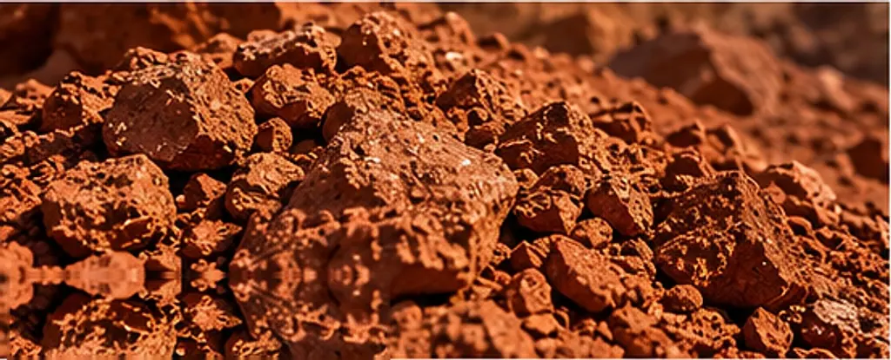

镍矿产品
腐殖土型与褐铁型红土镍矿
印尼红土镍矿主要分为两类，化学成分与冶炼路线各不相同。下列参数为我们的匹配依据，实际数值以每批货物确认为准。
镍矿产品
红土镍矿剖面
红土镍矿由超基性岩在热带气候下风化形成。富铁的褐铁型矿层位于近地表，富镁的腐殖土型矿层位于其下、基岩之上。
技术参数
- Ni
- 腐殖土型1.5% – 2.0%（参考）褐铁型0.8% – 1.5%（参考）
- Fe
- 腐殖土型较低；以供应商化验报告为准褐铁型较高；以供应商化验报告为准
- MgO
- 腐殖土型较高；以供应商化验报告为准褐铁型较低；以供应商化验报告为准
- SiO₂
- 腐殖土型以供应商化验报告为准褐铁型以供应商化验报告为准
- 水分
- 腐殖土型以化验报告为准；适用采购方上限褐铁型以化验报告为准；适用采购方上限
- 粒度
- 腐殖土型按合同约定褐铁型按合同约定
- 可供数量
- 腐殖土型按询盘逐一确认褐铁型按询盘逐一确认
- 装货地点
- 腐殖土型按供应商码头确认褐铁型按供应商码头确认